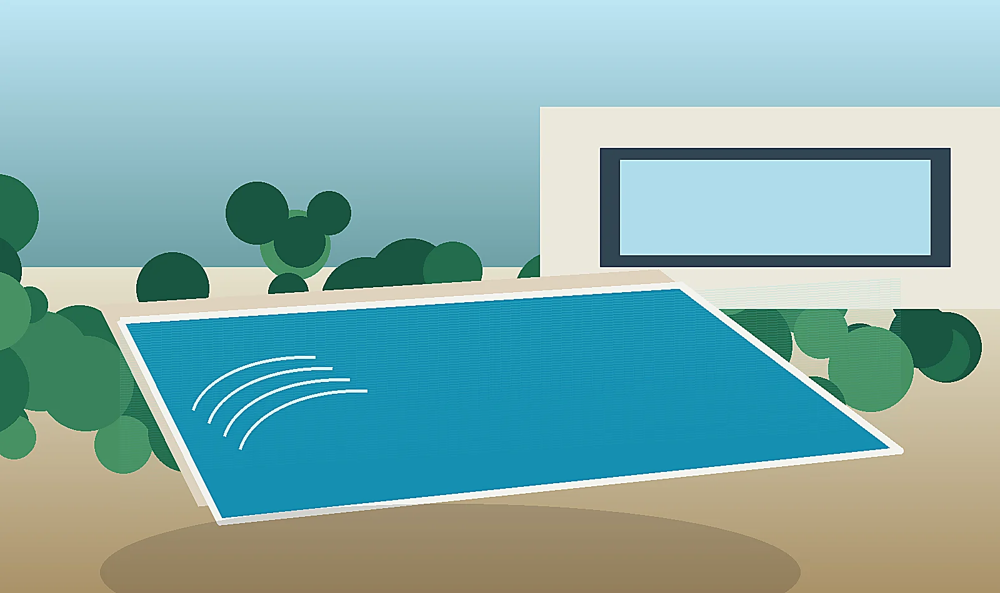
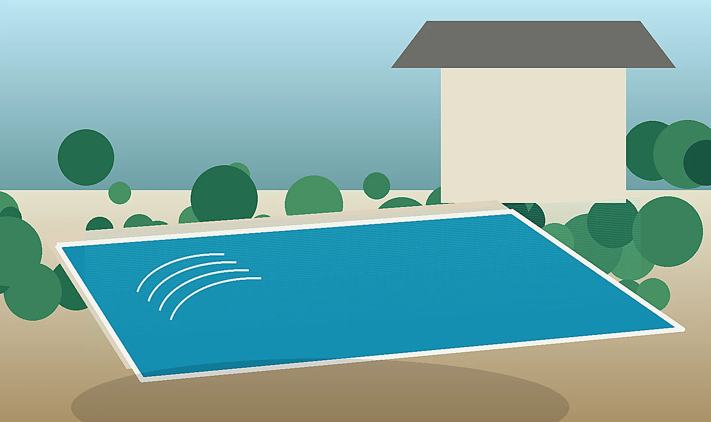
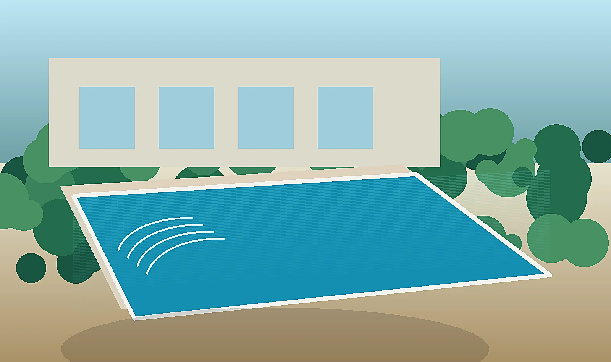
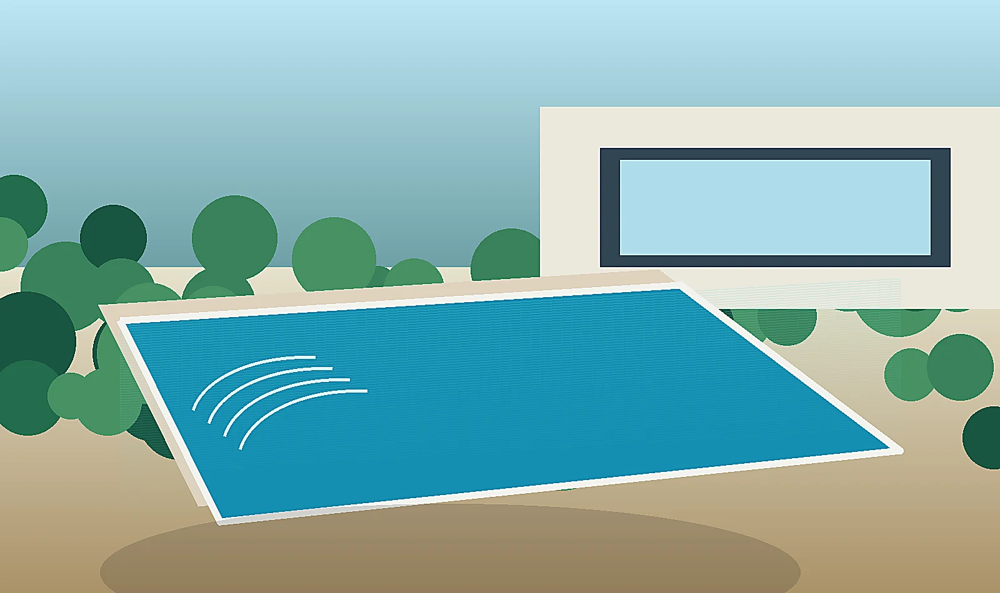

Pileta terminada
Proyecto residencial con terminaciones modernas y excelente integración con el jardín.
Diseñamos y construimos piletas de hormigón a medida en Lanús y alrededores. Obra integral, terminaciones modernas y atención personalizada por WhatsApp.
Una landing local ayuda a posicionar búsquedas específicas como “piletas en Lanús”, “construcción de piscinas en Lanús” y “piletas de hormigón Lanús”.

En Lanús recomendamos validar derechos de construcción, documentación municipal y condiciones de acceso antes de prometer fecha de obra. La recomendación es no iniciar movimiento de suelo sin revisar terreno, documentación, retiros, acceso de maquinaria y condiciones del barrio si corresponde.
Para que la página se vea más fuerte y completa, sumamos imágenes reales de obra, terminaciones y piletas terminadas que acompañan mejor el contenido local.

Proyecto residencial con terminaciones modernas y excelente integración con el jardín.

Imagen real de obra para mostrar estructura, excavación y avance del proyecto.

Bordes atérmicos, revestimientos y acabados que mejoran diseño y durabilidad.